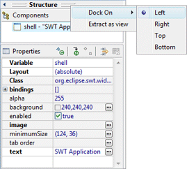
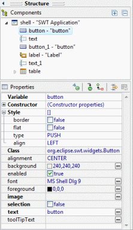
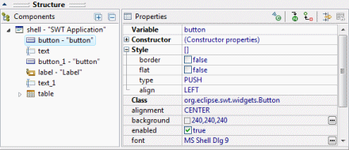
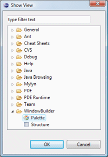
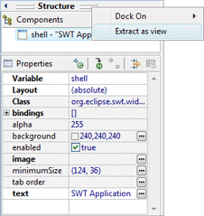
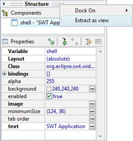

The Structure View is composed of the Component Tree and the Property Pane. The Component Tree shows the hierarchical relationship between all of the components in the design view, while the Property Pane displays properties and events of the selected controls and provides editable text fields, lists and other controls to allow you to edit properties and events
The position of the Structure View may be configured via drag and drop or by right-clicking on the Structure View header and selecting the Dock On command.

The Structure View may be docked to the top, bottom, left or right of the Design View.
 
The Structure View is also available as a standalone view. Use the Window > Show View > Other... command and open the WindowBuilder > Structure view or right-click on the Structure View and select the Extract as view command. Closing the Structure View will make the Structure View reappear as embedded view within the editor

 
